Here's a couple examples of my yoga-expertise:
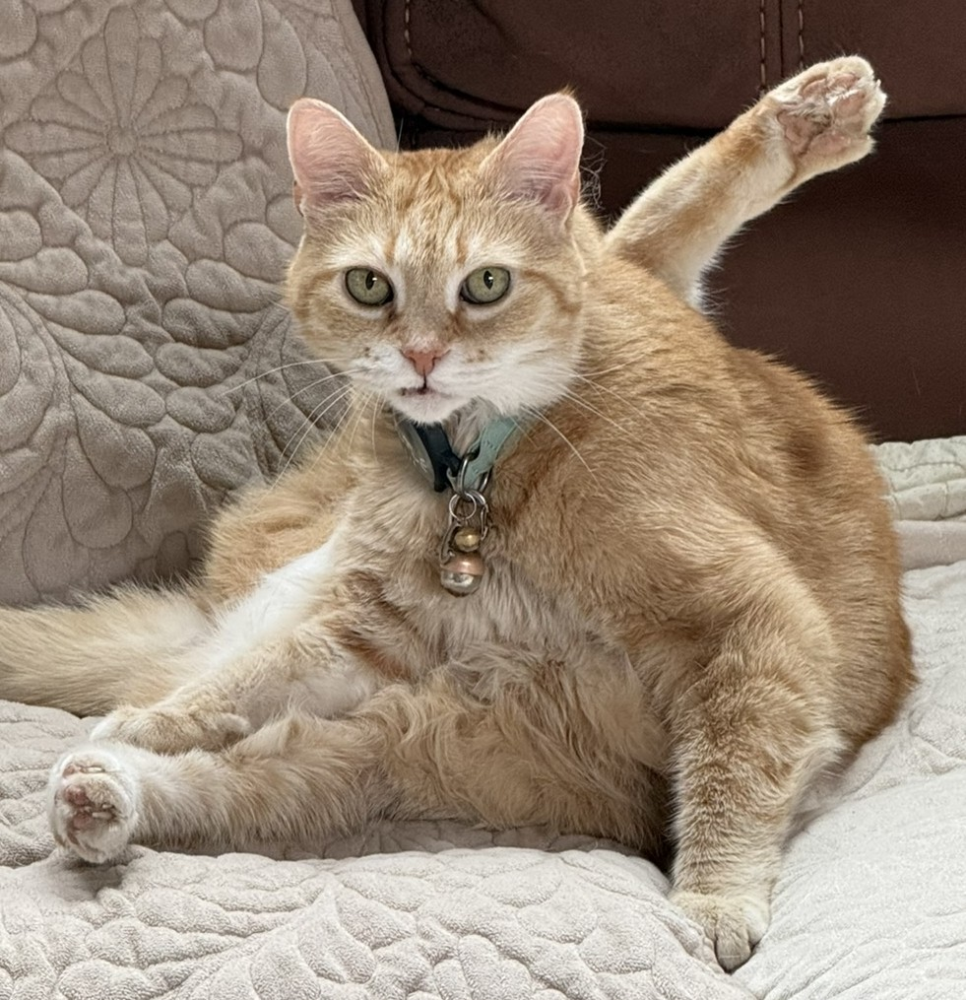
For my yoga beginners, this pose is called the "Eka Pada Sirsasana."
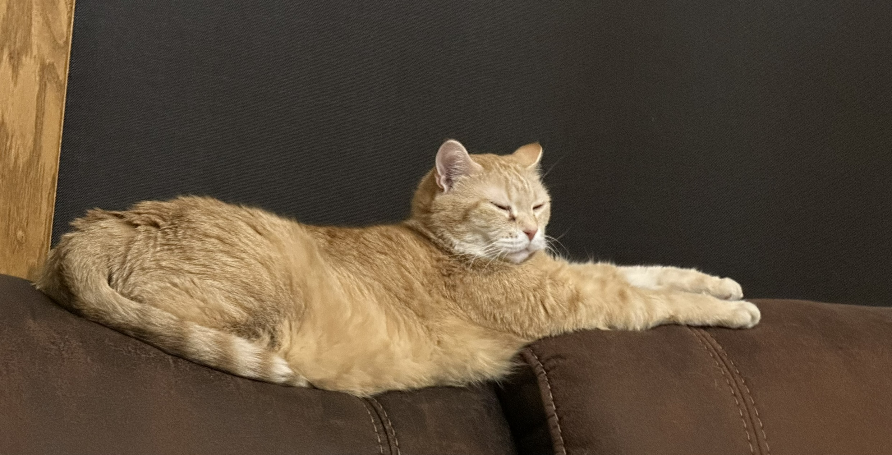
This pose, I invented. I call it the "Elongated-Cat;" similar to "Downward Dog," except I elongate my body, and I am a cat.
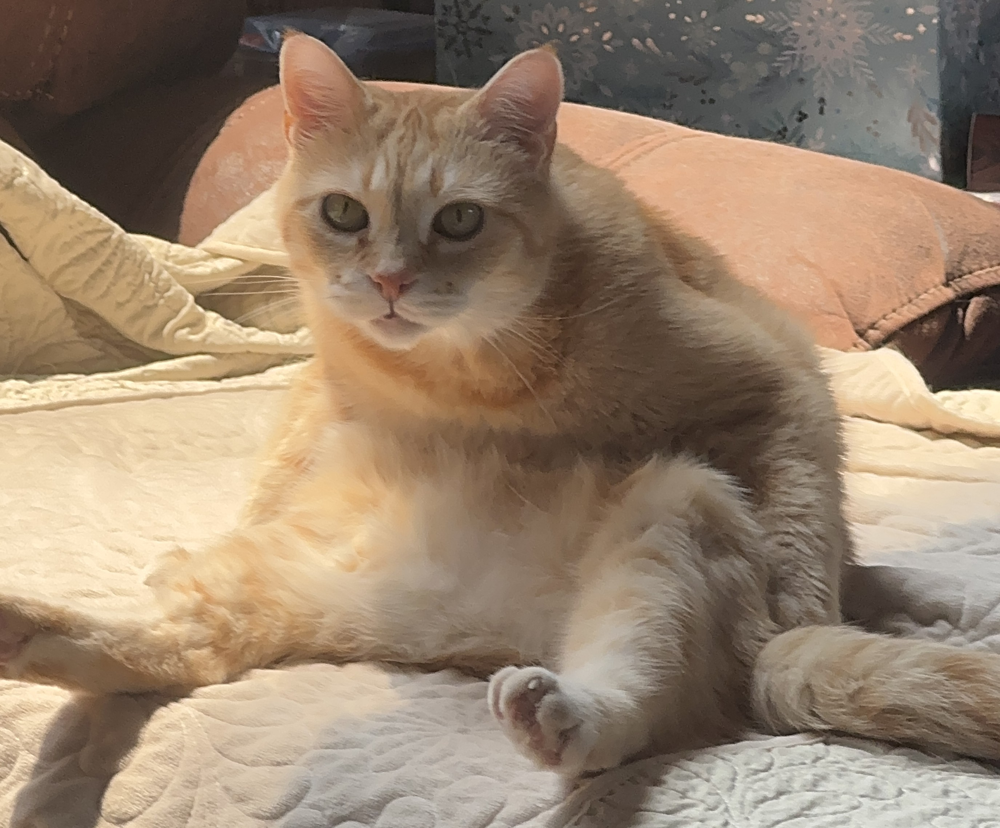
My favorite resting pose, "Sitting like my Humans Do."
Cozy Cat Skills
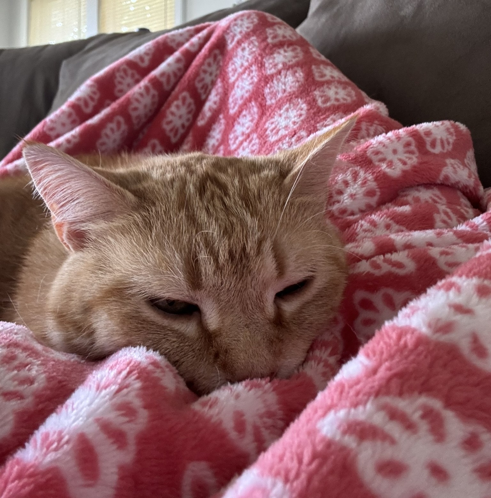
Proving that I am the world's best cuddler (title given by my favorite human).
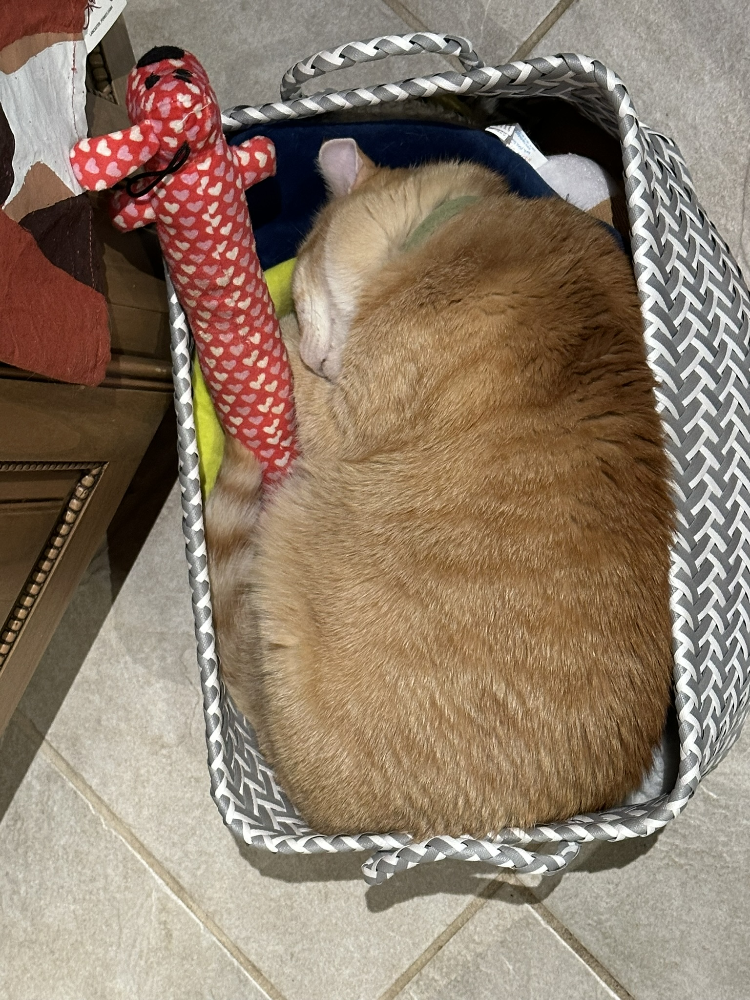
Sleep is no joke to me. I have mastered this skill; here, I am asleep in a bin of dog toys.
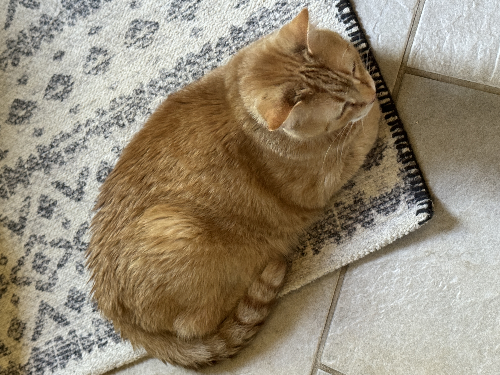
That's a solid 10/10 loaf.
Other Areas of Expertise
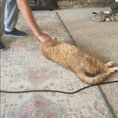
Demonstrating my ability to roll over on command (with ease).
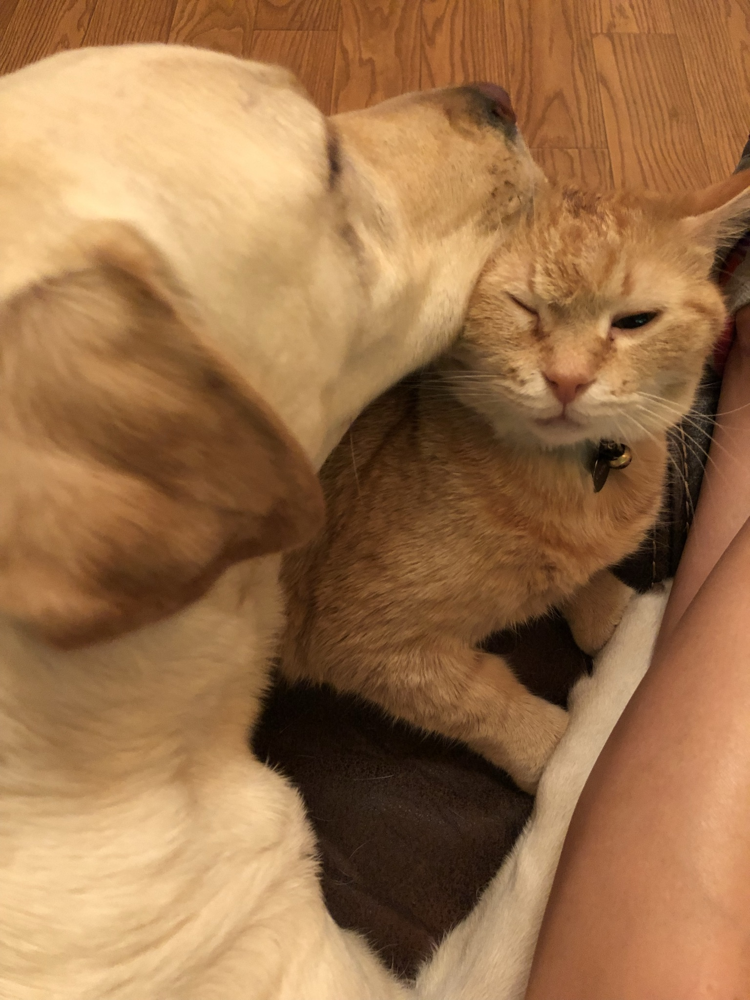
Personal hygeine is no laughing matter to me. My assistant, Ivy, gives me a nightly bath.
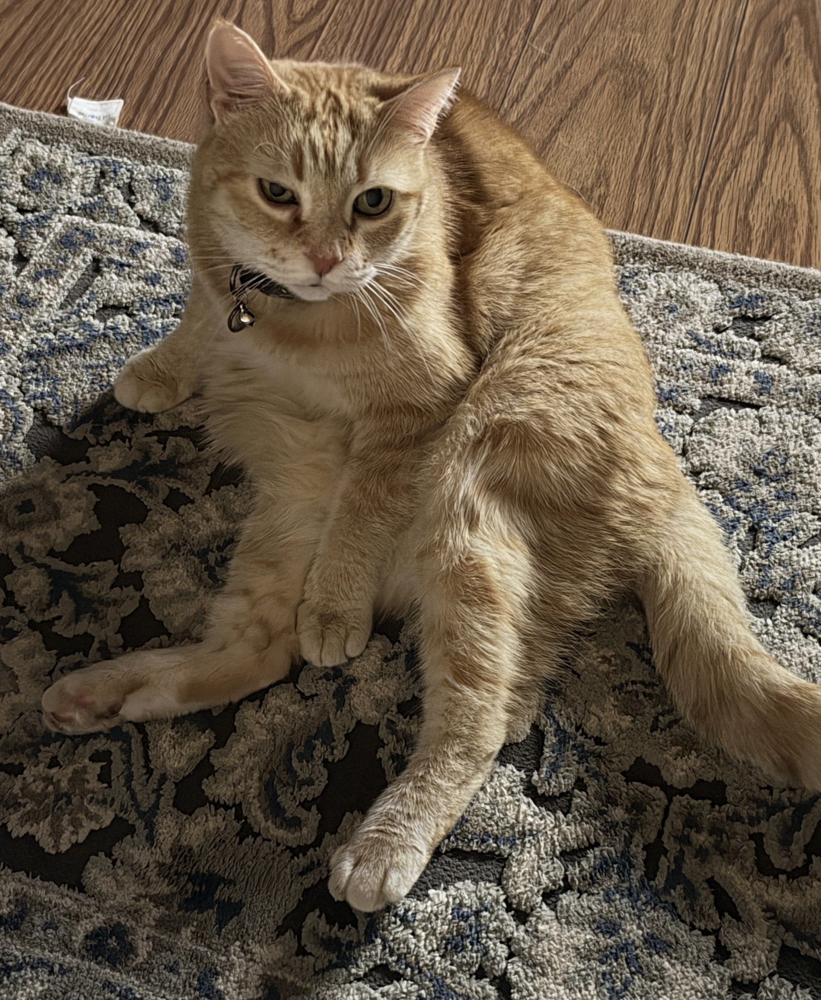
As mentioned previously, I take pride in my "Local Silly-Face Master" title.
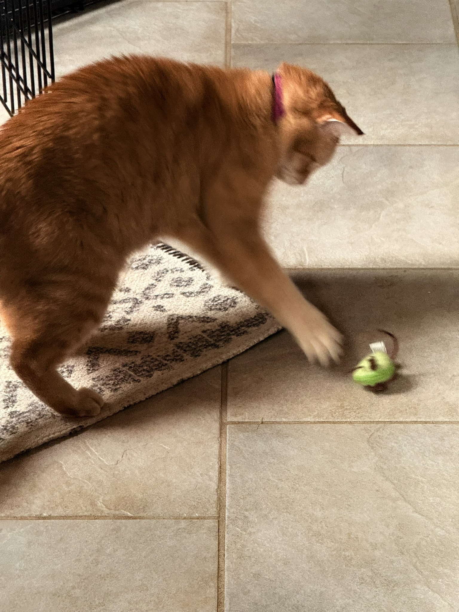
Exercise is very important to me, especially with all the treats I eat.
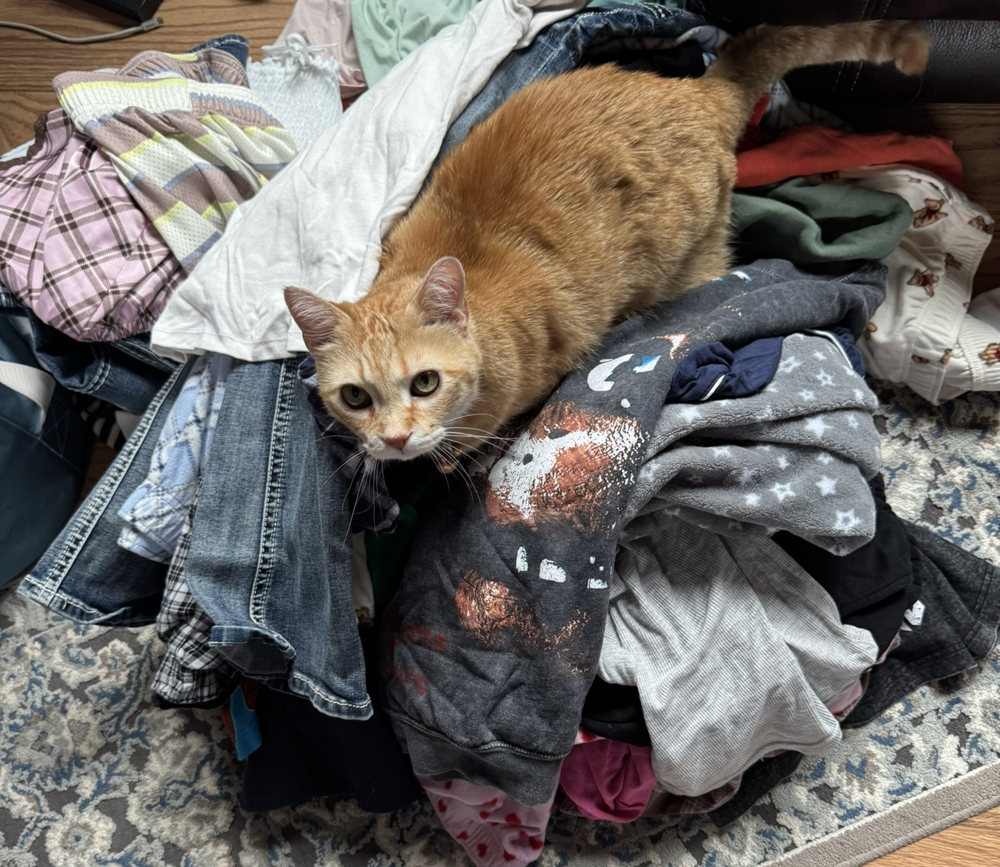
Although I wear the pants around the house, I occasionally help my favorite human with laundry. She gives me extra treats in doing so.